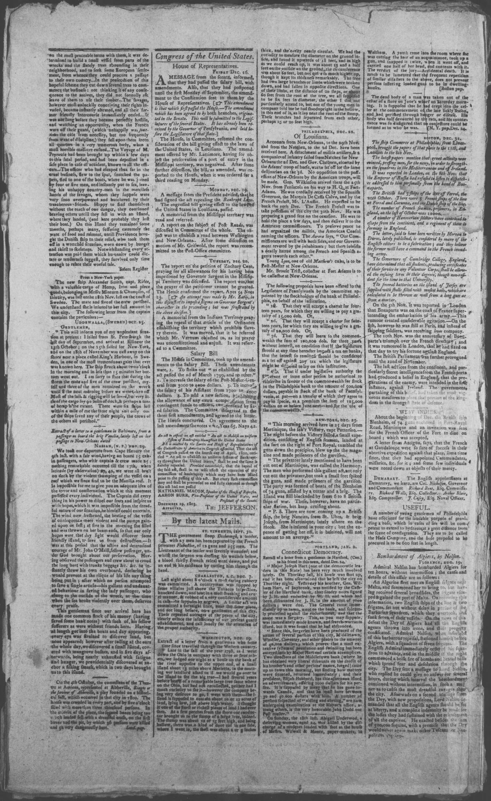

HN HN-050 · January 10, 1804 · Crime, Law & Justice > Fraud, Forgery & Counterfeiting > Forged documents
Source: Oracle Post, p. 2 — original page.
Report: A purported Hartford letter dated December 24 alleged that Major Joseph Hart left town after his brother rejected signatures used to secure discounted bank notes as forgeries. The writer said additional forged endorsements totaling approximately $40,000 surfaced, claimed suspected accomplices were questioned, and mentioned a $1,000 reward.
Assessment: A detailed but politically colored accusation reproduced from a correspondent; no court case or banking ledger has been reviewed. Follow-up open.
Authentic images retrieved from Library of Congress / Chronicling America. Article crops are located using the archive's own OCR word coordinates and rendered at native crop resolution; article clips are assembled from the archive's own article-block images; page scans are reduced-size access renditions. No images were generated, mocked, or retouched.

Not yet acquired. Queued for provider-specific acquisition testing (see source-acquisition manifest).
URL (preserved verbatim): https://www.loc.gov/resource/sn84023351/1804-01-10/ed-1/?sp=2
Saved research report: Historical_Newspaper_Event_Research_026-052_Consolidated_2026-10-23.md
Evidence note: A newspaper report means a historical publication made a claim; it does not establish that claim as fact. Contemporary reporting is separated from later scholarly context and our own assessment.